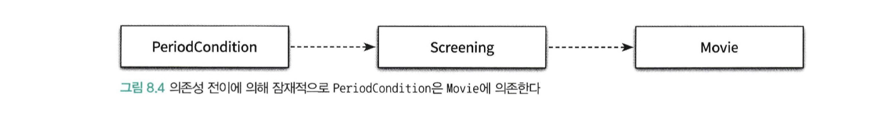

서론
잘 설계된 객체지향 어플리케이션은 작고 응집도 높은 객체들로 구성된다.
작고 응집성 높은 객체란 책임의 초점이 명확하고 한 가지 일만 잘하는 객체를 의미한다.
따라서 객체 간 협력을 통해 다른 객체에게 도움을 요청하여 여러가지 일을 수행할 수 있다.
협력은 객체가 다른 객체에 대해 알 것을 강요한다
다른 객체와 협력하기 위해서는 그런 객체 또는 클래스가 있다는 사실을 알고 있어야 한다.
객체가 수신할 수 있는 메세지에 대해서도 알고 있어야 한다.
이런 지식들이 객체 사이의 의존성을 낳는다.
의존성이란
의존성이란 의존하고 있는 대상의 변경에 영향을 받을 수 있는 가능성을 의미한다.
어떤 객체가 협력하기 위해 다른 객체로 필요로 할 때 두 객체 사이에 의존성이 존재하게 된다.
나아가 두 객체 사이 뿐만 아니라 모듈이나 더 큰 규모의 실행 시스템일 수도 있다. (ex. API 의존성)
의존성은 실행 시점과 구현 시점에 서로 다른 의미를 가진다.
- 실행 시점 : 의존하는 객체가 정상적으로 동작하기 위해서는 실행 시에 의존 대상 객체가 반드시 존재해야 한다.
- 구현 시점: 의존 대상 객체가 변경될 경우 의존하는 객체도 함께 변경된다.
의존성은 방향성을 가진다.
의존성은 방향성을 가지며 항상 단방향이다. (그 역은 성립하지 않는다.)
예를들어 PerioidCondition class에서 Screening class를 인자로 받는 경우
1 | public boolean isSatisfiedBy(Screening screening) { |
PeriodCondition 클래스는 Screening 클래스에 의존한다 라고 표현한다.
의존성은 변경에 취약하다
설계과 관련된 대부분의 용어들이 변경과 관련이 있다.
의존성 역시 변경과 관련이 있다.
두 요소 사이의 의존성은 의존되는 요소가 변경될 때 의존하는 요소도 함께 변경될 수 있다.
따라서 의존성은 변경에 의한 영향의 전파가능성을 암시한다.
의존성 전이

PeriodCondition 클래스가 Screening 클래스에 의존하고, Screening 클래스가 Movie 클래스에 의존하는 경우 의존성이 전이될 수 있다.
의존성이란 함께 변경될 수 있는 가능성 을 의미하기 때문에 모든 경우에 의존성이 전이되는 것은 아니다.
의존성이 실제로 전이될지 여부는 변경의 방향과 캡슐화의 정도에 따라 달라진다.
단, 의존성 전이는 변경에 의해 영향이 전파될 수도 있다는 일종의 경고이다.
직접 의존성과 간접 의존성
- 직접 의존성: 말 그대로 한 요소가 다른 요소에 직접 의존하는 경우를 가르킨다.
- 위의 예제에서 PeriodCondition은 Screening에 직접 의존한다.
- 이 경우 의존성은 코드에 명시적으로 드러난다. (PeriodCondition 내부 코드에서 Screening을 참조하는 코드가 존재한다)
- 간접 의존성: 직접적인 관계는 존재하지 않지만 의존성 전이에 의해 영향이 전파되는 경우를 가리킨다.
- 위의 예제에서 Movie 클래스 변경으로 인해 PeriodCondition까지 변경의 영향이 있을 수도 있음을 의미한다.
- 이 경우 의존성은 명시적으로 드러나지 않는다. (PeriodCondition 내부 코드에서 Movie에 대한 참조는 없다)
Runtime 의존성과 Compile time 의존성
Runtime 의존성
- 어플리케이션이 실행되는 시점에 갖는 의존성을 의미
- 런타임에 실제 생성되는 객체 간의 의존성을 가리킨다.
Movie라는 클래스와 AmountDiscountPolicy, PercentDiscountPolicy는 런타임에 직접적인 의존성을 갖는다.
Compile time 의존성
- 작성된 코드를 컴파일 하는 시점을 의미 (또는 문맥에 따라서는 코드 그 차제를 가리키기도 한다.)
- 동적 타입 언어의 경우에는 컴파일 타입이 존재하지 않기 때문에 컴파일이 수행되는 시점으로만 생각하면 의미가 모호해진다.
- 컴파일 타임에서는 코드에 대한 의존성을 가리킨다.
- 코드 관점에서는 Class 간의 의존성을 가리킨다.
Movie라는 클래스는 DiscountPolicy라는 클래스는 컴파일타임 의존성을 갖는다.
실제 Movie 클래스와 AmountDiscountPolicy, PercentDiscountPolicy는 코드 관점에서의 의존성은 존재하지 않는다.
유연하고 재사용 가능한 설계
유연하고 재사용 가능한 설계를 하기 위해서는 동일한 소스코드 구조를 가지고 다양한 실행 구조를 만들 수 있어야 한다.
어떤 클래스의 인스턴스가 다양한 클래스의 인스턴스와 협력하기 위해서는 협력할 인스턴스의 구체적인 클래스를 알아서는 안된다.
실제로 협력할 객체가 어떤 것인지는 런타임에 해결해야 한다.
만약 클래스가 협력할 객체의 클래스를 명시적으로 드러내고 있다면 다른 클래스의 읺스턴스와 협력할 가능성 자체가 없어지게 된다.
따라서 컴파일 타임 구조와 런타임 구조 사이의 거리가 멀면 멀수록 설계가 유연하고 재사용 가능해 진다.
객체지향 프로그램의 실행 구조는 소스코드 구조와 일치하지 않는 경우가 종종 있다.
코드 구조는 컴파일 시점에 확정되는 것이고 이 구조에는 고정된 상속 클래스 관계들이 포함된다.
하지만 프로그램 실행 시점 구조는 협력하는 객체에 따라 달라질 수 있다.
컨텍스트 독립성
유연하고 확장 가능한 설계를 만들기 위해서는 compile time 의존성과 runtime 의존성이 달라야 한다.
클래스는 자신과 협력할 객체의 구체적인 클래스에 대해 알아서는 안 된다.
구체적인 클래스를 알면 알수록 그 클래스가 사용되는 특정한 문맥에 강하게 결합되기 때문이다.
클래스가 특정한 문맥에 강하게 결합될수록 다른 문맥에서 사용하기는 더 어려워진다.
클래스가 사용 될 특정한 문맥에 대해 최소한의 가정만으로 이뤄져 있다면 다른 문맥에서 재사용하기가 더 수월해진다.
이를 컨텍스트 독립성 이라 부른다.
설계를 유연하게 만드는 마법
- 자신이 실행될 컨텍스트에 대한 구체적인 정보를 최대한 작게 알아야 한다.
- 각 객체가 해당 객체를 실행하는 시스템에 관해 아무것도 알지 못한다는 의미
- 최소한의 정보만 알자
- 정보가 적으면 다양한 컨텍스트에서 재사용 될 수 있다.
- 설계는 더 유연해지고 변경에 대응하기 쉬워진다.
- 응집력 있는 객체를 만들 수 있다
- 객체 구성 조합에 따라 변경 가능한 시스템으로 나아갈 수 있다.
의존성 해결하기
compile time 의존성은 구체적인 runtime 의존성으로 대체돼야 한다.
이를 의존성 해결 이라 부른다.
의존성을 해결하는 방법은 일반적으로 다음과 같은 세 가지 방법을 사용한다.
객체를 생성하는 시점에 생성자를 통해 의존성을 해결
- new A(new B())
객체 생성 후 setter 메서드를 통해 의존성 해결
- (new A()).setB(new B())
메서드 실행 시 인자를 이용해 의존성 해결
- (new A()).method(new B())
- 이 방식은 협력 대상에 대해 지속적으로 의존 관계를 맺을 필요 없이 메서드가 실행되는 동안만 의존 관계가 존재해도 무방한 경우
- 메서드 실행 시마다 의존 대상이 매번 달라져야 하는 경우에 유용
Setter Method 방식의 단점
setter 메서드를 이용하는 방법은 실행 시점에 의존 대상을 변경할 수 있기 때문에 설계를 좀 더 유연하게 만들 수 있다.
하지만 객체가 생성된 후에 협력에 필요한 의존 대상을 설정하기 때문에
객체를 생성하고 의존 대상을 설정하기 전까지는 객체의 상태가 불완전할 수 있다는 점이다.
아래와 같은 코드는 NullPointerException 예외가 발생할 것이다.
1 | Movie avatar = new Movie(); |
생성자 방식 + setter 방식
setter method 방식을 보완하기 위해서는 생성자 방식와 setter 방식을 혼합하는 것이다.
항상 객체를 생성할 때 의존성을 해결해서 완전한 상태의 객체를 생성한 후 필요에 따라 setter 메서드를 이용해 의존대상을 변경할 수 있게 할 수 있다.
이 방법은 시스템의 상태를 안정적으로 유지하면서도 유연성을 향상시킬 수 있기 때문에 의존성 해결을 위해 가장 선호되는 방법이다.
1 | Movie avatar = new Movie(new AmountDiscountPolicy()); |
의존성과 결합도
객체지향 패러다임의 근간은 협력이다. 따라서 객체들이 협력하기 위해서는 서로의 존재와 수행 가능한 책임을 알아야한다.
이런 지식들이 의존성을 낳는다.
따라서 모든 의존성이 나쁜 것은 아니다. 의존성은 객체들의 협력을 가능하게 하는 매개체이기 때문이다.
하지만 의존성이 과하면 문제가 된다.
바람직한 의존성을 위해서는 재사용성을 고려해야한다.
- 어떤 의존성이 다양한 환경에서 클래스를 재사용할 수 없도록 제한한다면 그 의존성은 바람직하지 못하다
- 특정 컨텍스트에 강하게 결합된 의존성은 바람직하지 못하다
- 어떤 의존성이 다양한 환경에서 클래스를 재사용할 수 있다면 그 의존성은 바람직하다.
- 특정 컨텍스트에 독립적인 의존성은 바람직한 의존성이다.
바람직한 의존성과 바람직 하지 못한 의존성을 나타내는 용어로 결합도 라는 용어를 사용한다.
- 강한 결합도 (tight coupling)
- 의존성이 다양한 환경에서 클래스를 재사용할 수 없는 바람직하지 못한 의존성
- 약한 결합도 (loose coupling)
- 의존성이 다양한 환경에서 클래스를 재사용할 수 있는 의존성
- 컨텍스트 독립적인 의존성
지식이 결합을 낳는다.
결합도의 정도는 한 요소가 자신이 의존하고 있는 다른 요소에 대해 알고 있는 정보의 양으로 결정된다.
많은 요소를 알고 있을 수록 두 요소는 강하게 결합된다.
예시
- 일단 가격을 계산한다. -> 약한 결합도
- 가격을 계산하는데 할인방식은 금액 할인 방식이고 평일에만 할인이 된다. -> 강한 결합도
추상화에 의존하라
추상화란 어떤 양상, 세부사항, 구조를 좀 더 명확하게 이해하기 위해 특정 절차나 물체를 의도적으로 생략하거나
감춤으로써 복잡도를 극복하는 방법이다.
추상화를 이용하면 현재 다루고 있는 문제를 해결하는 데 불필요한 정보를 감출 수 있다.
따라서 대상에 대해 알아야 하는 지식의 양을 줄일 수 있기 때문에 결합도를 느슨하게 유지할 수 있다.
목록에서 아래쪽으로 갈수록 클라이언트가 알아야하는 지식의 양이 적어지기 때문에 결합도가 느슨해진다.
- 구체 클래스 의존성 (concrete class dependency)
- 추상 클래스 의존성 (abstract class dependency)
- 인터페이스 의존성 (interface dependency)
따라서 의존하는 대상이 더 추상적일 수록 결합도는 낮아진다
명시적인 의존성
결합도를 느슨하게 만들기 위해서는 인스턴스 변수의 타입을 추상 클래스나 인터페이스로 선언하는 것만으로는 부족하다
클래스 안에서 구체 클래스에 대한 모든 의존성을 제거해야 한다. (아예 import도 안되게)
하지만 런타임에는 구체클래스의 인스턴스와 협력해야 하기 때문에 클래스의 인스턴스 타입이 뭔지는 알아야 한다.
위에서 얘기했던 것 처럼 의존성을 해결하는 방법에는 생성자, setter 메서드, 메서드 파라미터를 사용하는 세 가지 방식이 있다.
여기서의 방법은 인스턴스 변수의 타입은 추상 클래스나 인터페이스로 정의하고
생성자, setter 메서드, 메서드 파라미터로 실제 코드를 작성할 때에는 구체 클래스를 사용하는 것이다
1 | public class Movie { |
의존성을 대상을 생성자의 인자로 전달받는 방법과 생성자 안에서 직접 생성하는 방식 의 큰 차이점은
퍼블릭 인터페이스를 통해 할인 정책을 설정할 수 있는 방법을 제공하는지의 대한 여부다
명시적으로 퍼블릭 인터페이스를 통해 의존성을 노출하는 방식을 명시적인 의존성 이라고 부른다.
숨겨진 의존성
1 | public class Movie { |
반면 위와 같은 코드에서는 할인 정책에 대한 의존성을 퍼블릭 인터페이스로 제공하지 않고 코드 내에 숨겨져 있다.
의존성이 퍼블릭 인터페이스에 표현되지 않는 방식을 숨겨진 의존성 이라고 부른다.
의존성이 명시적이지 않으면 의존성을 파악하기 위해 내부 구현을 직접 살펴볼 수 밖에 없다.
의존성을 내부 구현으로 숨겨두지 마라
의존성은 명시적으로 표현되어야 한다.
의존성을 내부 구현에 숨겨 두면 개발자가 직접 내부 구현을 살펴봐야하는 고통이 따른다.
유연하고 재사용 가능한 설계란 퍼블릭 인터페이스를 통해 의존성이 명시적으로 드러나는 설계이다.
명시적인 의존성을 사용해야지만 퍼블릭 인터페이스를 통해 컴파일 타임 의존성을 적절한 런타임 의존성으로 교체할 수 있다.
new는 해롭다
대부분의 언어에서는 클래스의 인스턴스를 생성할 수 있는 new 연산자를 제공한다.
안타까운 사실은 new를 잘못 사용하면 클래스 사이의 결합도가 극단적으로 높아진다.
결합도 측면에서 new가 해로운 이유는 크게 두 가지다.
- new 연산자를 사용하기 위해서는 구체 클래스의 이름을 직접 서술하여야 한다.
- 따라서 new를 사용하는 클라이언트는 추상화가 아닌 구체 클래스에 의존할 수밖에 없기 때문에 결합도가 높아진다.
- new 연산자는 생성하려는 구체 클래스 뿐만 아니라 어떤 인자를 이용해 클래스의 생성자를 호출해야 하는지도 알아야 한다.
- 따라서 new를 사용하면 클라이언트가 알아야 하는 지식의 양이 늘어나기 때문에 결합도가 높아진다.
따라서 new 연산자를 통한 구체 클래스 생성을 잘못하면 결합도가 높아지므로 변경에 의해 영향을 받기 쉬워진다.
또한 new를 통해 구체 클래스 생성에 끝나는 것이 아닌 협력할 구체 클래스의 인스턴스를 생성하기 위해 아래와 같은 지식이 필요하다
- 어떤 인자들이 필요한가?
- 어떤 순서로 파라미터를 사용해야 하는가?
- 인자들에 대한 타입도 의존성에 추가된다
new를 없애기 위해서는
new를 사용하지 않도록 하기 위해서는 다음과 같은 방법을 사용하면 된다.
인스턴스를 생성하는 로직과 생성된 인스턴스를 사용하는 로직을 분리한다.
1 | public class Movie { |
위의 코드처럼 사용한다면 Movie라는 클래스 내에서는 구체 클래스에 대한 의존성 없이 DiscountPolicy라는 인터페이스 의존성만 존재한다.
실제 구체 클래스가 되는 AmountDiscountPolicy의 대한 생성 책임은 Movie 클래스를 생성하는 클라이언트로 옮겨지고
Movie는 AmountDiscountPolicy의 인스턴스를 사용하는 책임만 남는다.DiscountPolicy라는 인터페이스 의존성만 Movie 클래스에 두었기 때문에 다른 할인정책을 적용하더라도 유연하게 사용이 가능하다
new를 가끔은 사용해도 괜찮다.
클래스 안에서 객체의 인스턴스를 직접 생성하는 방식이 유용한 경우도 있다.
주로 협력하는 기본 객체를 설정하고 싶은 경우가 이에 속한다.
대부분의 경우에는 AmountDiscountPolicy 의 인스턴스와 협력하는 경우를 생각해보자
이런 상황에서 모든 경우에 인스턴스를 생성하는 책임을 클라이언트로 옮긴다면 클라이언트 코드들 사이에 중복 코드가 늘어나고
Movie의 사용성도 나빠질 것이다.
이런 문제를 해결하는 방법을 기본 객체에 생성하는 생성자를 추가하고
이 생성자에서 DiscountPolicy의 인스턴스를 인자로 받는 생성자를 체이닝 하는 것이다.
1 | public class Movie { |
- 기본 생성자에서 DiscountPolicy를 파라미터로 받는 생성자를 호출한다.
호출 시, AmountDiscountPolicy 객체를 사용하여 Movie 객체를 생성하도록 한다.
이제 클라이언트에서는 대부분의 경우에 기본 생성자를 통해 AmountDiscountPolicy의 인스턴스와 협력하게 하면서도
컨텍스트에 적절한 DiscountPolicy의 인스턴스로 의존성을 교체할 수 있다.
표준 클래스에 대한 의존은 해롭지 않다
의존성이 불편한 이유는 그것이 항상 변경에 대한 영향을 암시하기 때문이다.
따라서 변경될 확률이 거의 없는 클래스라면 의존성이 문제가 되지 않는다.
예를 들어 JDK에 포함된 표준 클래스가 이 부류에 속한다.
String, ArrayList와 같은 클래스들은 거의 제로에 가깝기 때문에 인스턴스를 직접 new로 생성하더라도 문제가 되지 않는다.
비록 클래스를 직접 생성하더라도 가능한 추상적인 타입을 사용하는 것이 확장성 측면에서 유리하다
1 | List<DiscountCondition> conditions = new ArrayList<>(); |
위의 코드와 같이 ArrayList를 사용하여 객체를 생성하더라도 타입을 ArrayList의 인터페이스인 List를 사용하면
확장성 측면에서 유리하다
추가적으로 의존성에 대한 영향이 적은 경우에도 추상화에 의존하고 의존성을 명시적으로 드러내는 것은 좋은 설계이다.
조합 가능한 행동
어떤 객체와 협력하느냐에 따라 객체의 행동이 달라지는 것은 유연하고 재사용 가능한 설계가 가진 특징이다.
유연하고 재사용 가능한 설계는 응집도 높은 책임들을 가진 작은 객체들을 다양한 방식으로 연결함으로써 애플리케이션의 기능을 쉽게 확장할 수 있다.
그렇다면 유연하고 재사용 가능한 설계는 무엇인가?
바로 객체가 어떻게(how) 하는지에 대한 코드를 장황하게 나열하지 않고,
객체들의 조합을 통해 무엇(what)을 하는지를 표현하는 클래스들로 구성된다.
따라서 클래스의 인스턴스를 생성하는 코드를 보는 것만으로 객체가 어떤 일을 하는지 쉽게 파악할 수 있다.
코드에 드러난 로직을 해석할 필요 없이 객체가 어떤 객체와 연결됐는지를 보는 것만으로도 객체의 행동을 쉽게 예상하고 이해할 수 있기 때문이다.
다시 말해 선언적으로 객체의 행동을 정의할 수 있다.
1 | new Movie( |
위의 코드를 보면 객체의 행동이 짐작이 간다.
- 영화 제목은 아바타
- 영화의 가격은 10,000원
- 가격 할인 정책이 적용된다
- 할인 금액은 800원
- 1회차, 10회차 영화에 대해 할인이 적용된다
- 월요일에는 10시~12시 사이의 영화에 대해서 할인이 적용된다
- 목요일에는 10시~21시 사이의 영화에 대해서 할인이 적용된다
이와 같이 유연하고 재사용 가능한 설계는 작은 객체들의 행동을 조합함으로써 새로운 행돌을 이끌어낼 수 있는 설계다
훌륭한 객체지향 설계란 어떻게 하는지를 표현하는 것이 아니라 객체들의 조합을 선언적으로 표현함으로써 객체들이 무엇을 하는지를 표현하는 설계다
그리고 지금까지 설명한 것처럼 이런 설계를 창조하는 데 있어서의 핵심은 의존성을 관리하는 것이다.
참고
- Objects(코드로 이해하는 객체지향 설계) - chapter8. 의존성 관리하기